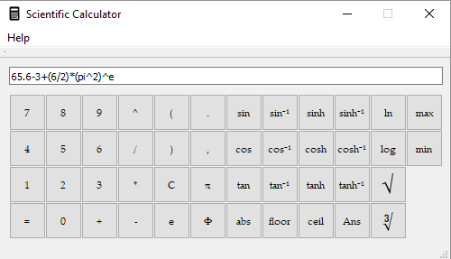

Matthew Jones
Software Developer


Chess |
Android Weather App |
Chip8 Interpreter |
Scientific Calculator |
|  | |||
|
A simple Chess game that was originally implemented in Java with the GUI made using the Swing library.
Contains all of the standard chess functionality in a simple and non-intrusive user interface.
Re-written in C++ using the Qt library for the GUI, but otherwise identical to the original Java version. |
An Android application that can fetch real-time weather data from any location on Earth. The user may select a point on Earth using the Google Maps API, and the latitude and longitude for that point are sent to the OpenWeatherMap API, where a forecast can be fetched, and subsequently presented to the user in either a 5-day or 2-day format. Selected weather forecast for Zagreb, Croatia using Google Maps. |
An interpreter written in Python for the Chip8 interpreted programming language first appearing on the
Telmac 1800 computer in the 1970s. Reads in a binary data file and fetches each opcode one at a time and
executes the appropriate instruction.
Graphics, sound and controls are implemented using the Pygame library. |
A scientific calculator written in C++ using Qt for its GUI. Capable of executing all operations you may expect to see on a scientific calculator. Uses the Shunting-Yard algorithm to convert infix mathematical expressions to their Reverse Polish Notation counterparts, which are then evaluated, where the final numerical result can be determined and displayed to the user. |
Snake Game |
Tetris |
||
| Snake game written in Python using the Pygame library. Keeps score of how many pieces the snake has eaten as well as increasing its length and speed accordingly. The snake is stored as a linked list allowing for each insertion of elements at the beginning and end of the snake cleanly and in constant time. | Implemented a fully-featured Tetris game using Python and the Pygame library, allowing for piece movement and rotating while falling down at a constant rate. Game keeps track of score and level as filled rows are removed as the game is in play. Game terminates if a block is placed out-of-bounds. Speed of blocks falling increases with level. |